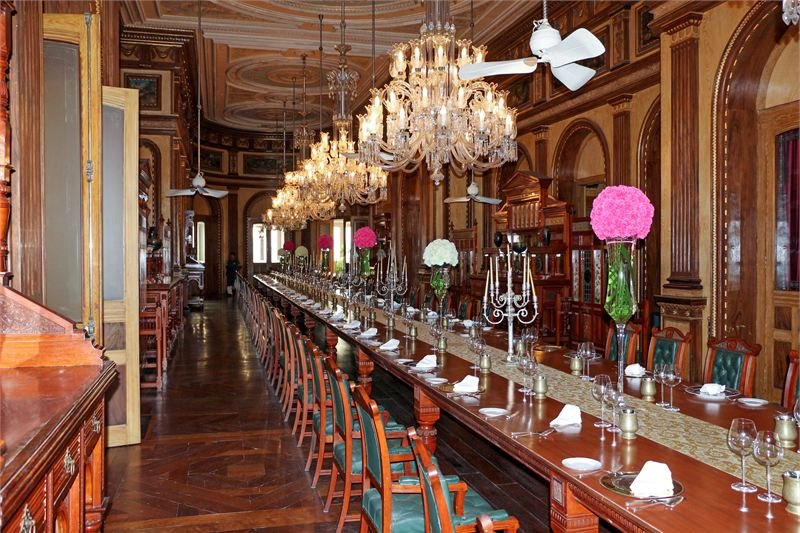
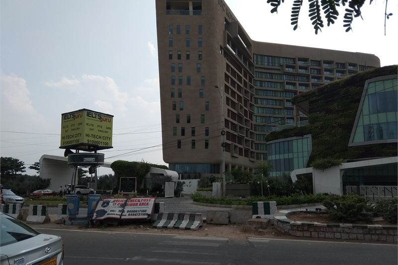

How these hotels were researched
▼- Rates: compared across more than one booking platform on the same day, quoted as a range with the month checked. Not a quote, and they move.
- Guest reviews in bulk: looking for complaints that repeat across many months, not single bad nights.
- Location: checked against a map, measured to the thing you actually came for.
- Real cost of entry: taxes, compulsory meal plans, transfers, and what is not included in the headline rate.
- What I could not confirm is said plainly in the text rather than filled in.
Hyderabad stretches between two distinct worlds. In the south sits the historic old city with Charminar, Chowmahalla Palace, and royal Nizami history. Thirty kilometres northwest lies HITEC City and Madhapur, dominated by glass tech towers and suburban highways.
Choosing a hotel in Hyderabad comes down to commute time. Staying at Falaknuma Palace when you have morning meetings in HITEC City means spending three hours daily negotiating congested city traffic across PV Narasimha Rao Expressway.
Rates listed below were checked in July 2026 across major booking channels, showing off-peak summer rates and peak winter rates.
Taj Falaknuma Palace

Perched 2,000 feet above Hyderabad on a hill overlooking the old city, Falaknuma was built in 1894 as the residence of Nizam Viqar-ul-Umra. Taj restored the palace over a decade before opening it as a 60-room hotel in 2010.
Guests arrive by horse-drawn carriage from the main security gate up the winding driveway. Interior spaces feature Italian marble staircases, Venetian chandeliers, stained glass windows, and a 101-seat teak dining table. The evening Qawwali performance on the courtyard terrace offers dramatic sunset views over the old city lights.
Indicative rates start from Rs 38,000 in monsoon low season and reach Rs 120,000+ for historical suites in winter. What you pay for is regal atmosphere and museum-grade heritage architecture. The drawback is location isolation. The surrounding Falaknuma neighborhood is dense and noisy, making leaving the palace gates on foot unappealing.
I could not confirm whether Taj Falaknuma's golf cart transfer from the lower gate operates continuously during heavy rain squalls in August.
| Indicative rate | Rs 38,000 to Rs 120,000 per night |
|---|---|
| Rates checked | July 2026 |
| Location | Falaknuma Hill, 5 km south of Charminar |
| Best for | Special occasions, royal Nizam history, and self-contained resort stays |
In its favour
- Incomparable 19th-century royal palace architecture and Nizam art collections
- Spectacular elevated views over Hyderabad old city from terrace lawns
Worth knowing first
- Long commute times to tech districts in HITEC City and Gachibowli
- High food and beverage prices inside palace dining venues
- Access is controlled and parts of the palace close for private events with little public notice
ITC Kohenur, A Luxury Collection Hotel

ITC Kohenur stands in the heart of HITEC City overlooking Durgam Cheruvu lake. Designed with angular glass facets echoing the famous Koh-i-Noor diamond, it caters directly to business travelers working in Knowledge City offices.
Rooms feature automated climate controls, oversized work desks, soundproofed double-glazed windows, and views across the lake cable bridge. Dum Pukht Begum's serves refined Hyderabadi Avadhi cuisine, while Yi Jing offers contemporary Chinese dining.
Rates range from Rs 13,500 to Rs 32,000 depending on corporate tech convention schedules. The location permits walking access to tech parks like Raheja Mindspace, eliminating taxi rides during morning peak hours.
| Indicative rate | Rs 13,500 to Rs 32,000 per night |
|---|---|
| Rates checked | July 2026 |
| Location | HITEC City, Knowledge City corridor |
| Best for | Business travelers visiting tech parks and regional office hubs |
In its favour
- Immediate access to major HITEC City software campuses
- Exceptional dining venues including Dum Pukht Begum's
Worth knowing first
- Modern high-rise commercial surroundings lack historical character
- Heavy traffic along Durgam Cheruvu bridge access road during rush hours
- Nothing worth walking to after dark, so every evening out involves a car
Park Hyatt Hyderabad
Banjara Hills provides an ideal central compromise location between old city heritage and HITEC City tech parks. Park Hyatt features a massive eight-story granite atrium centered around contemporary art installations.
Rooms start at a generous 45 square metres with marble bathrooms, rainfall showers, and walk-in closets. Rates run from Rs 11,500 to Rs 28,000 per night. Choosing Banjara Hills cuts commute times to both Charminar (25 minutes) and HITEC City (20 minutes).
The atrium design creates an open indoor acoustic space, meaning evening piano music in the lobby lounge can be heard from lower-floor room corridors.
| Indicative rate | Rs 11,500 to Rs 28,000 per night |
|---|---|
| Rates checked | July 2026 |
| Location | Road No 2, Banjara Hills |
| Best for | Balanced access to both Old Hyderabad and HITEC City |
What it costs to actually get there
Hyderabad’s Rajiv Gandhi International Airport (HYD) in Shamshabad sits far south of the central city. A prepaid airport taxi to Banjara Hills or Jubilee Hills costs roughly Rs 900 to Rs 1,100, while reaching HITEC City takes about 45 minutes using the Outer Ring Road. If you are staying at Taj Falaknuma, the drive is relatively short (around 30 minutes) because the palace sits on the southern edge of the city facing the airport.
Pushpak airport luxury buses provide a cheaper air-conditioned alternative at Rs 250 to Rs 300, with designated routes stopping near major hotel hubs in Secretariat and Madhapur. Auto-rickshaws are cheap for short distances but drivers frequently demand negotiated fares rather than using the meter, especially outside major tech parks during evening rush hour.
When to go, and what changes
Hyderabad’s weather dictates the comfort of heritage exploration. The dry heat peaks intensely between April and early June, pushing daytime temperatures well past 40°C. Exploring the open courtyards of Golconda Fort or the Charminar markets becomes physically exhausting during midday. Luxury hotels drop their corporate rates slightly during these peak summer months, leaning heavily on their climate-controlled atriums and swimming pools.
The monsoon from July to September brings relief but causes significant waterlogging on key transit routes, making the commute between Banjara Hills and HITEC City unpredictable. The optimal visiting window is between November and February, when cool, dry air makes outdoor sightseeing pleasant and the evening palace terraces comfortable.
Choosing your Hyderabad neighborhood
If your visit centers on royal heritage, Biryani trails, and Chowmahalla Palace, Taj Falaknuma provides an unforgettable stay. If you are in town for IT meetings, ITC Kohenur saves hours of highway travel. For mixed leisure and business trips, Banjara Hills offers the best central base.
Comparing commercial tech city travel? Review our Bengaluru business hotels guide or explore historic urban stays in our Kolkata heritage hotels review.
Practical Hyderabad travel tips
- Rajiv Gandhi International Airport (HYD) in Shamshabad is located 25 km south of Banjara Hills. PV Narasimha Rao Expressway provides an elevated toll route into the city center.
- Hyderabad Metro connects Miyapur to LB Nagar and Nagole to Raidurg, offering efficient transit into HITEC City to bypass road traffic jams.
- Old City sightseeing around Charminar and Laad Bazaar is best done on foot early in the morning before 10:30am when shop shutters open and crowds surge.
- Hyderabadi Biryani portions at legendary institutions like Shadab or Cafe Bahar are large. A single handi easily feeds two adults.